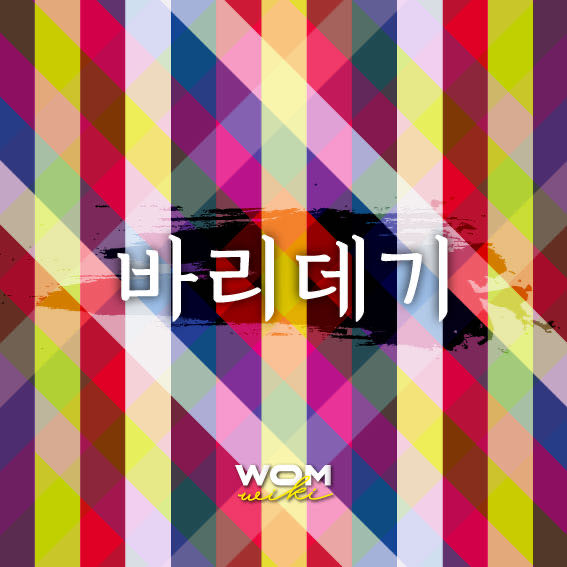

바리데기는 자신을 버린 아버지의 목숨을 구하기 위해 저승으로의 여정을 떠나 불사약을 구해온 효녀이자, 망자의 영혼을 저승으로 천도하는 무속인이 된다.
"옛날 이씨주상금마마가 7공주를 본다는 해에 왕비를 맞아들인 후 계속해서 6공주를 낳았다. 이에 실망한 왕과 왕비는 일곱번째는 꼭 왕자를 보기 위하여 온갖 치성을 다 드리지만 일곱째 아이도 역시 공주였다. 이에 노한 대왕은 일곱번째 공주를 옥함에 담아 강물에 띄워 버렸다. 아기는 석가 세존의 지시로 바리공덕 할아비와 할미에게 구출되어 자라났다. 바리공주가 15세가 되던 해에 대왕마마가 병이 들었다. 청의동자가 대왕마마의 꿈속에 나타나 하늘이 정한 아기를 버린 죄로 죽게 되었다며 살기 위해서는 버린 아기가 구해다 준 무장신선의 불사약을 먹어야 한다고 가르쳐 주었다. 이에 바리공주를 찾으라는 왕명이 내려지고 한 대신의 충성으로 바리공주를 찾았다. 바리공주는 아버지의 불사약을 구하러 저승세계를 지나 신선세계로 갔다. 그곳에서 무장신선을 만나 불사약을 받는 값으로 나무하기 3년, 물긷기 3년, 불때기 3년 등 9년 동안 일을 해주고 무장신선과 혼인해 아들 일곱을 낳아주었다. 그리고 돌아와보니 이미 대왕마마는 죽어 있었다. 바리공주가 가지고 온 불사약과 꽃 덕분으로 다시 살아난 대왕마마는 공주의 소원을 들어 만신의 왕이 되게 하고 무장신선은 죽은 사람의 길에서 노제를 받아 먹게 하고, 일곱 아들은 저승의 십대왕이 되게 하였다."
"부모의 병을 고치기 위해 온갖 고행을 견디고 자신의 일신을 바치면서 불사약을 구해내고야 만다는 정성어린 효녀담이다."
함흥본 <바리데기>는 남성중심적 세계관이 시종일관 관철되지 않는다. 부친의 승천으로 이야기는 모녀 중심의 서사로 진행된다. 바리데기는 모친의 부고를 접하고 그를 살리기 위해 모험을 떠났고, 저승이 아닌 천상을 향했다.
바리데기가 모험에서 돌아와 부모는 살아나고 저승행을 거부한 언니와 사위들이 용서받는다는 이야기와 다르게 함흥 <바리데기>에서는 모녀 사이의 갈등은 계속되고, 그 결과는 죽음이라는 비극으로 나타난다. 함흥 <바리데기>는 이승에서의 화해, 행복한 결말을 도모하지 않는다. 비극을 풀고 거두는 것은 이승이 아니라 저승이라는 인식, 즉 죽음을 직시하는 현실주의적 인식이 나타난다.
바리데기는 효성이 지극한 딸이 아니었고, 아비가 아니라 ‘어미의 병’을 고치기 위해, 목숨을 되살리기 위해 ‘저승’이 아닌 ‘천상’으로 갔다. 바리데기는 거룩한 신이 되지 않고 평범한 인간으로 비명횡사하여 죽음을 맞이했다.